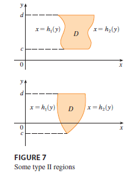

We also consider plane regions of type II, which can be expressed as \[ D = \{(x, y) | c \le y \le d, h_1(y) \le x \le h_2(y)\} \tag{4} \] where \(h_1\) and \(h_2\) are continuous. Two such regions are illustrated in Figure 7.

Using the same methods that were used in establishing (3), we can show that \[ \iint_D f(x, y) dA = \int_c^d \int_{h_1(y)}^{h_2(y)} f(x, y) dx dy \tag{5} \] where \(D\) is a type II region given by Equation 4.